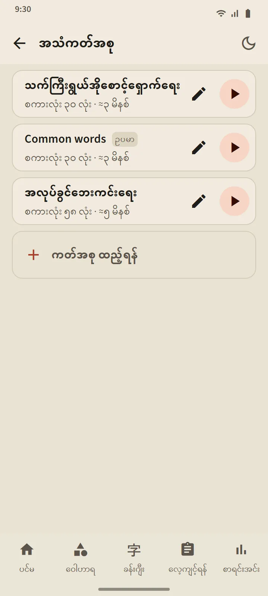
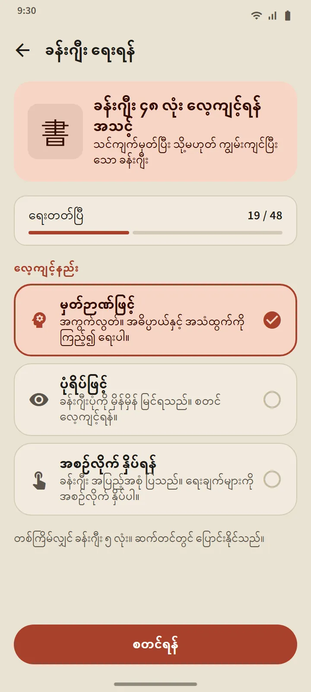

သင်ကိုယ်တိုင် တည်ဆောက်သော အသံကတ်အစု
စကားလုံး 5 လုံးမှ 100 အထိ ကတ်အစုတစ်ခု တည်ဆောက်ပါ- တစ်လုံးချင်း ရှာ၍ဖြစ်စေ၊ ဝေါဟာရ ကတ်အစုတစ်ခုခုမှ အစုလိုက်ယူ၍ဖြစ်စေ ရသည်။ ဖွင့်စက်က စကားလုံးတစ်လုံးစီကို ဂျပန်လို ဖတ်ပြပြီး အက်ပ်ဘာသာစကားဖြင့် ၎င်း၏ အဓိပ္ပာယ်ကို ဆက်ဖတ်ပြသည် (ဂျပန်လိုသာ ကြားလိုလျှင် “အဓိပ္ပာယ်ကို အသံထွက်ဖတ်ပြရန်” ကို ပိတ်ပါ)။ လက်ရှိစကားလုံးကို ဖူရိဂနာနှင့်အတူ ကြီးကြီးပြပြီး စာရင်းထဲမှ စကားလုံးတစ်လုံးကို နှိပ်၍ ထိုနေရာသို့ ခုန်သွားနိုင်သည်။
ထိန်းချုပ်မှုများ- ရောနှော၊ ပြန်ဖွင့်၊ နှင့် 0.75×၊ 1× သို့မဟုတ် 1.25× အမြန်နှုန်း။ မျက်နှာပြင်ပိတ်သွားသော်လည်း အက်ပ်ပြောင်းသော်လည်း ဖွင့်စက်က ဆက်အလုပ်လုပ်သည်၊ ဖွင့်စက်အသိပေးချက်နှင့် နားကြပ်ခလုတ်များက ထိန်းချုပ်မှုကို ဆက်ထားသည်။
- အခမဲ့ဗားရှင်း- ကတ်အစု 3 ခု။ Premium- အကန့်အသတ်မရှိ၊ ကတ်အစုတစ်ခုကို အသံဖိုင်တစ်ခု (M4A) အဖြစ် ဒေါင်းလုဒ်လုပ်နိုင်သည်။
- နမူနာ ကတ်အစုတစ်ခုဖြစ်သော “Common words” ကို အသုံးအများဆုံး စကားလုံးများမှ အလိုအလျောက် ဖန်တီးပေးထားသည်၊ ကြိုက်သလို ပြင်နိုင် သို့မဟုတ် ဖျက်နိုင်သည်။
- နားထောင်ခြင်းက စကားလုံး၏ အချိန်ဇယား သို့မဟုတ် အဆင့်ကို ဘယ်တော့မှ မပြောင်းလဲစေပါ။


အသံထွက် လေ့ကျင့်ခန်း- ပြောလိုက်ပြီး ရှေ့ဆက်ပါ
သင် မှတ်မိပြီ သို့မဟုတ် ကျွမ်းကျင်ပြီ ဖြစ်သော စကားလုံးတစ်လုံးသည် ကတ်ပေါ်တွင် ပေါ်လာသည်၊ မိုက်ခရိုဖုန်းက ကိုယ်တိုင်ဖွင့်သွားသည်၊ သင်က စကားလုံးကို ပြောရသည်၊ သင့်ဖုန်းက မှတ်သားမိလျှင် နောက်တစ်လုံး ပေါ်လာသည်။ မမှတ်သားမိလျှင် မျက်နှာပြင်က ကြားခဲ့သည်ကို ပြပြီး ထပ်နားထောင်သည်၊ သုံးကြိမ်ကြိုးစားပြီးနောက် ဥပမာကို ဖွင့်ပေးသည်။ မိုက်ခရိုဖုန်းခလုတ်၊ ဥပမာခလုတ်နှင့် ကျော်ရန် တို့ အမြဲရှိသည်။ အကြိမ်တစ်ခုတွင် စကားလုံး 5၊ 10၊ 15 သို့မဟုတ် 20 ရှိသည်။
သင့်အသံကို ဖုန်း၏ အသံမှတ်သားသည့် ဝန်ဆောင်မှု (များသောအားဖြင့် Google ၏) က လုပ်ဆောင်သည်၊ အက်ပ်က မရိုက်ကူးပါ၊ မသိမ်းဆည်းပါ။ သင်၏ လေသံကို မဟုတ်ဘဲ စကားလုံးကိုသာ အကဲဖြတ်သည်။ အသံမှတ်သားမှုက မှားကြားနိုင်သောကြောင့် ဤလေ့ကျင့်ခန်းသည် စကားလုံး၏ အဆင့်ကို ဘယ်တော့မှ မလျှော့ပါ။

ခန်းဂျီး ရေးခြင်း- မျဉ်းတစ်ကြောင်းချင်း
သင် မှတ်မိပြီ သို့မဟုတ် ကျွမ်းကျင်ပြီ ဖြစ်သော ခန်းဂျီးများအတွက်ဖြစ်သည်။ အဓိပ္ပာယ်နှင့် အဖတ်များကိုသာ ပြသည်၊ သင်က ကျယ်ပြန့်သော အကွက်တစ်ခုတွင် ရေးပြီး လက်ချောင်းမြှောက်လိုက်သည်နှင့် မျဉ်းတစ်ကြောင်းစီကို စစ်ဆေးသည်- ပုံသဏ္ဍာန်၊ ဦးတည်ချက်နှင့် အစဉ်။ မှန်သောမျဉ်းသည် စံပုံသဏ္ဍာန်သို့ ကပ်ညှပ်သွားသည်၊ အစဉ်မှားခြင်း သို့မဟုတ် ဦးတည်ချက်ပြောင်းပြန်ဖြစ်ခြင်းကို စာတစ်ကြောင်းဖြင့် ငြင်းပယ်သည်၊ နှစ်ကြိမ်မှားပြီးနောက် နောက်မျဉ်းကို စတင်သည့်နေရာနှင့်အတူ မှိန်မှိန်ပြသည်။
- မှတ်ဉာဏ်ဖြင့်- အကွက်လွတ်။ ပုံရိပ်ဖြင့်- ခန်းဂျီးကို မှိန်မှိန်ပြပြီး ကြိုတင်ပြင်ဆင်လေ့ကျင့်ရန်။ အစဉ်လိုက် နှိပ်ရန်- ခန်းဂျီးကို အပြည့်ပြပြီး ၎င်း၏ မျဉ်းများကို အစဉ်လိုက် နှိပ်ရသည်။
- လှုပ်ရှားပုံ ခလုတ်က ခန်းဂျီးတစ်လုံးလုံး ရေးသွားပုံကို အချိန်မရွေး ပြပေးသည်။
- ခန်းဂျီးတစ်လုံးကို မတူညီသော ရက်နှစ်ရက် အကူအညီမရဘဲ မှတ်ဉာဏ်ဖြင့် ရေးနိုင်လျှင် ရေးတတ်ပြီ ဟု ရေတွက်သည်၊ အကြိမ်တစ်ခုလျှင် ခန်းဂျီး 5၊ 10 သို့မဟုတ် 15 လုံး။


နေရာတိုင်းတွင် အသံထွက်
ဝေါဟာရကတ်များ၊ ခန်းဂျီးကတ်များ၊ စကားလုံးအသေးစိတ်၊ ကာနာ သင်ခန်းစာများ၊ သဒ္ဒါ ဥပမာများနှင့် နားထောင်ရေး မေးခွန်းအားလုံးကို သင့်ဖုန်း၏ ဂျပန် text-to-speech စနစ်က ဖတ်ပြသောကြောင့် အသံဖိုင်များ ဒေါင်းလုဒ်လုပ်ရန် မလိုပါ။ အသံအရည်အသွေးသည် ဖုန်းတစ်လုံးစီ၏ စနစ်အတိုင်း ဖြစ်သည်။